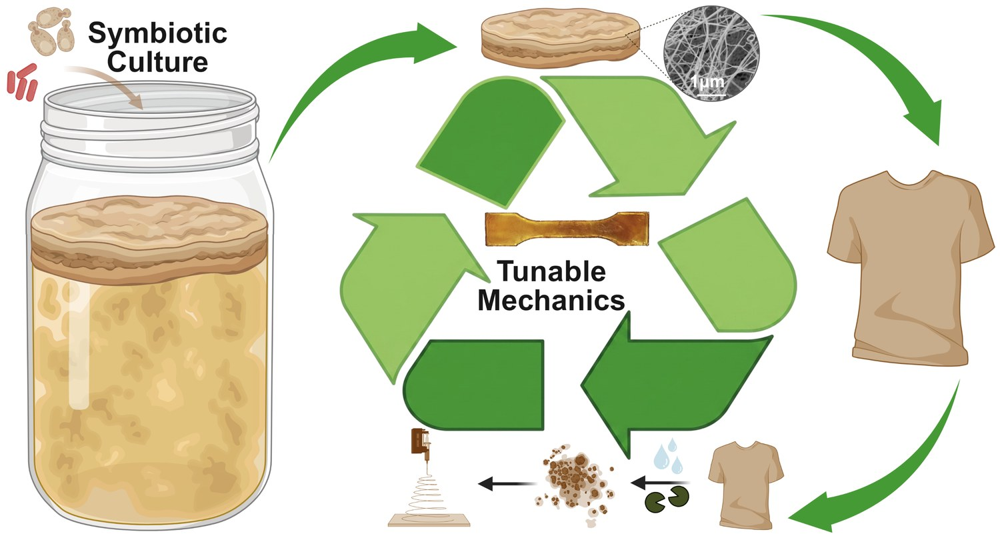

Luying Louise He · PhD candidate, Materials Science & Engineering · University of Massachusetts Amherst
I grow materials.
Most engineering materials are extruded, melted or cast. Mine are fermented — assembled by bacteria and yeast in sweet tea, at room temperature and atmospheric pressure. My research is about what happens next: how to control what grows, how to make it do a job, and how to take it back apart into something new.
A kombucha pellicle is a nonwoven mat of cellulose nanofibers that a microbial consortium builds at the air–liquid interface over about two weeks. Everything I work on hangs off that one fact.
i
Control the growth
Inoculum, carbon source, nutrient load, temperature, pH. Five variables, systematically swept, moved mat thickness roughly eighteenfold and turned a kitchen ferment into a reproducible process with a defined operating window.
ii
Give it a job
Filtration membranes that can be rinsed and reused. Conductive versions coated by in-situ polyaniline polymerization or gold deposition, so a grown material can also carry current.
iii
Take it back
Cellulase dissolves a worn-out mat in 72 hours at better than 90% recovery. The recovered solids get electrospun into a second-generation nanofiber mat. The material is a feedstock, not waste.
Selected work
Both first-author papers are open access under CC‑BY 4.0.

Kombucha-Derived Cellulose Non-Wovens: Growth Optimization, Mechanics, and Re-Processing
Biomacromolecules 2026, 27 (10), 6738 · He, L. L.; Lopez, J. E.; Schiffman, J. D.
We grew the mats, broke them, and grew them again. Drying route turned out to matter more than anything else — freeze-drying took ultimate tensile strength from 1.7 to 14.4 MPa against oven drying. Then we fermented a batch into infant clothing, dissolved it with cellulase once it was outgrown, and electrospun the recovered solids into fresh nanofibers.
3D-Bioprinted Marine Bacteria for the Degradation of Polyhydroxybutyrate Bioplastics
ACS Applied Polymer Materials 2026 · He, L. L.; Cai, H.; Gona, R. S.; Rohe, T. C.; Gangan, M. S.; Lai, T.; Sullivan, D. R.; Silberstein, M. N.; Meyer, A. S.
A sticker you print out of living marine bacteria and stick onto a piece of bioplastic, which then eats it. The bacteria stay viable past three weeks, the degradation rate tunes with biomass and temperature, and the sticker peels off and works again on the next object. Twenty-one days of storage leaves its modulus and adhesion unchanged — which is what it would take to actually ship one.
Degradation of Polyhydroxyalkanoate. Published PCT International Patent Application WO2025019459A1, PCT/US2024/038110, 2025.
Meyer, A. S.; He, L.; Omand, M.; Santoro, A. E.
Talks & posters
Kombucha Non-Woven Membranes for Sustainable Water FiltrationSIMSE, Northeastern Section ACS · Boston · 2026 — Poster Runner-Up
Kombucha Non-Woven Membranes for Sustainable Water FiltrationSEED: Synthetic Biology Engineering, Evolution & Design · Denver · 2026
Sustainable and Recyclable Nonwoven Materials from Kombucha BiofilmsUMass–Bayreuth Polymer Conference · Amherst · 2024
3D-Printed Living Materials with Marine Bacteria for Bioplastics DegradationSEED · Atlanta · 2024
3D-Printed Marine Bacteria for the Degradation of BioplasticsGordon Research Conference, Synthetic Biology · Newry, ME · 2023
Recognition
Best Poster AwardHigh Resolution NMR Symposium, UMass Amherst · 2026
Three Minute Thesis — campus finalistUMass Amherst · 2026
Biotechnology Training Program traineeNIH T32 GM135096, with travel grant · 2026